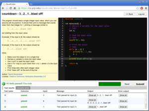

Hey course instructors! Thanks to a grant from Amazon Web Services, we can directly host CloudCoder for a small number of courses during the 2013-2014 academic year. Please contact us if you are interested.
CloudCoder is an open source web-based programming exercise system (inspired heavily by CodingBat). It is designed to make it easy for instructors of introductory programming courses to assign short exercises to students for skills development and assessment. Currently, exercises in C/C++, Java, Python, and Ruby are supported.
Because CloudCoder is web-based, it is easy for students to use. The only software students need to work on exercises is a web browser.
The screenshot on the right shows a C exercise (click for larger image). The Screenshots page shows CloudCoder in action.
The CloudCoder exercise repository is a database of freely-redistributable exercises written by CloudCoder users. You can easily import problems from the repository into your own CloudCoder installation for your students to use. You can also publish the exercises you write to the repository.
To run CloudCoder, you need two Linux servers: one to host the web application and database, and one to compile and test student submissions. Only the web/database server needs to be network-facing. See the Install page for details.
If you are an instructor interested in adopting CloudCoder, you can request an account on our demo server.
The CloudCoder wiki is where the CloudCoder documentation lives.


{kind=link}